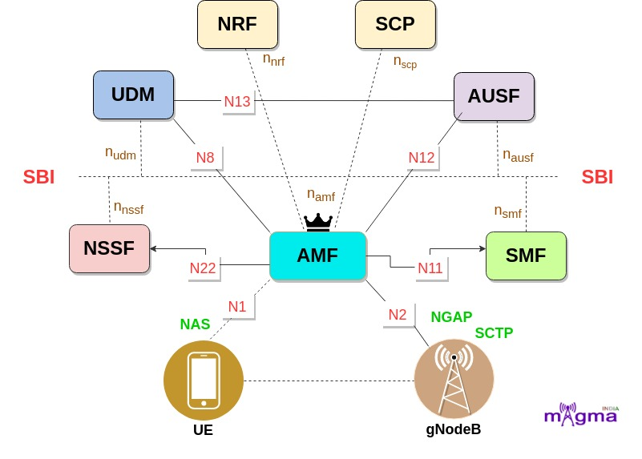
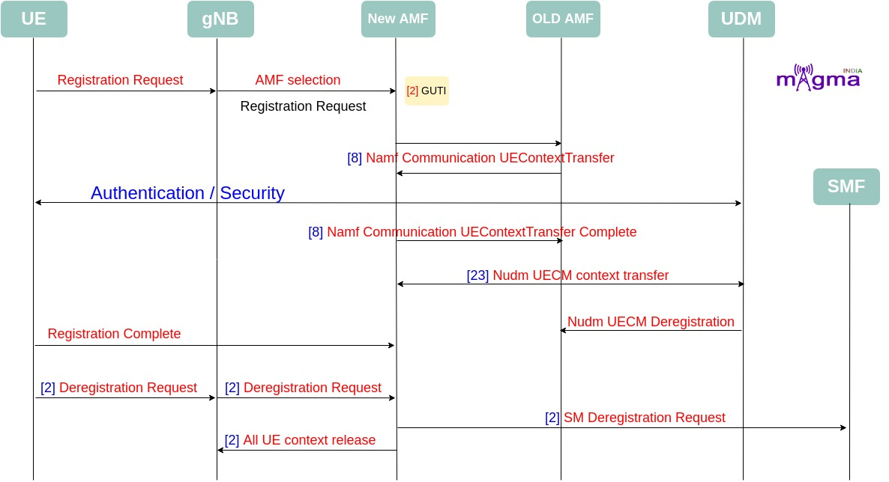
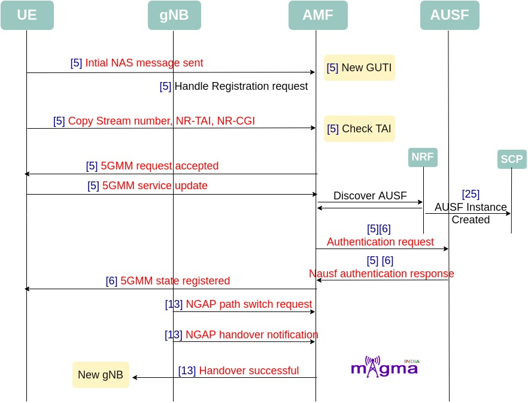
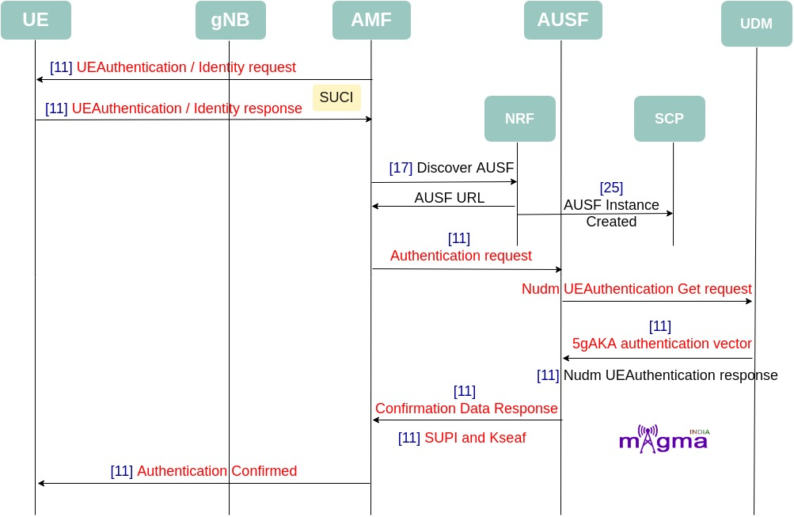
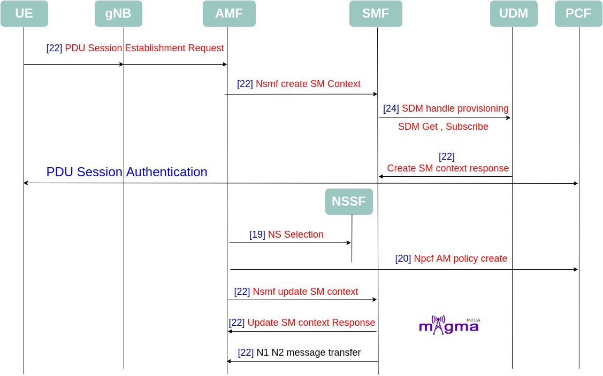

Access and Mobility Management Function [0]¶
AMF(Access and Mobility Management Function) is a Control Plane(CU) function in the 5G Core Network. 5G AMF is the evolution of 4G MME. It supports the Termination of NAS signaling, NAS ciphering & integrity protection, registration management, connection management, mobility management, access authentication and authorization, and security context management. gNodeB first needs to connect with AMF to access any 5G services.
Interface¶
N1¶
N1 is the interface between UE and AMF. AMF retrieves all the connection and session-related information from the UE over the N1 interface.
N2¶
UE-associated and non-UE-associated communication between AMF and gNodeB take place over this interface.
N8¶
N8 is the interface between AMF and UDM. When AMF needs subscriber data like session-related subscription data, policy rules for users and particular UEs, and any other information, at that time this interface is used to access data from UDM to AMF.
N11¶
Messages received over the N11 interface represent a trigger to add, modify or delete a PDU session across the user plane.
N12¶
N12 emulates AUSF within the 5G Core offering services to the AMF via the AUSF service-based N12 interfaces. The 5G network represents the service-based interface, with a focus on the AUSF and AMF.
N22¶
Interface between AMF and NSSF. AMF selects the best Network Functions (NF) across the network with the help of NSSF. NSSF provides the network functions location to the AMF over the N22 interface.
SBI¶
Service-Based Interface is the API-based communication between network functions.
Protocols¶
NAS [9]¶
The 5G NAS(Non-Access Stratum) is a control plane protocol that is present at the radio interface(N1 interface) between UE and AMF. This manages the mobility and session-related context within 5GS(5G System).
Call Flow¶
Registration and Deregistration¶
UE and gNB registration request to AMF
AMF selection
[2] Registration reject response.
[2] Initialize registration request.
[2] The AMF shall assign a new 5G-GUTI for particular UE
[2] AMF new GUTI assign: guami + tmsi
[2] AMF UE confirms GUTI
[2] If the new GUTI is valid, then we need to remove previous GUTI in hash table.
[2] Finding AMF-UE: 1. By teid 2. By SUPI 3. By SUCI 4. By message 5. By GUTI
[8] NAMF communication UE Context transfer
[2] Authentication and security
[8] UE context transfer complete
[23] Nudm uecm context transfer
[7] AMF context parse config
[7] AMF tmsi pool generate
[7] NGAP open
[2] Deregistration request
[2] Delete all the AMF-session context in the AMF-UE Context
[2] SM deregistration request
[2] Free Sbi object memory
[2] UE context release
[23] AMF Nudm uecm deregistration
[8] AMF release all sm context
[7] AMF event terminated
[7] AMF sbi close
[2] Delete gNB context
Mobility Management¶
[5] Handle registration request
[5] UE send initial NAS message to AMF
[5] Set 5gs registration type:KSI , TSC
[5] AMF new GUTI
[5] Copy Stream number , NR-TAI, NR-CGI from ran_ue
[5] Check TAI
[5] AMF selected algorithm should be equal to NAS security algorithm
[5] 5GMM Request accepted
[5] 5GMM handle registration update
[5] 5GMM handle service request
[5] Initial NAS service request message should contain security header type,ngKSI,TMSI,security header type
[5] 5GMM handle service update
[17] NRF discovers AUSF
[25] Initialize SCP NF instance
[5] Identity response SUCI
[6] 5GMM state registered
[13] NGAP handle path switch request
[13] NGAP handle handover required
[13] NGAP handle handover notification
[13] NGAP handle ran configuration update
[5] 5GMM handle deregistration request
[5] Set 5gs deregistration type
[5] AMF sbi release all sessions
[5] Clear paging info
[5] Clear SM context
[5] Deassociate NG with NAS
Authentication¶
[11] UE Authentication request
[11] UE response
[17] NRF discovers AUSF
[25] Initialize SCP NF instance
[11] NAMF Nausf authentication request
[11] 5gAKA
[11] Av5gAka contains authentication vector for 5gAKA method
[11] Amf_ue -> SUCI
[11] Confirmation URL for 5g AKA
[11] SEAF starts authentication procedure
[11] SUPI and Kseaf
[11] Authentication confirmed
[11] OR Authentication failed
Context Setup and Session Modification¶
[22] PDU session establishment request
[22] Nsmf create SM context
[22] SBI HTTP status created
[24] Nudm sdm get SDM
[24] Nudm SDM handle provisioned
[19] NS selection for pdu session
[22] AMF nsmf update sm context
[20] Npcf AM policy create
[22] Sm context response
[22] N1N2 message transfer
[22] Nsmf context updated